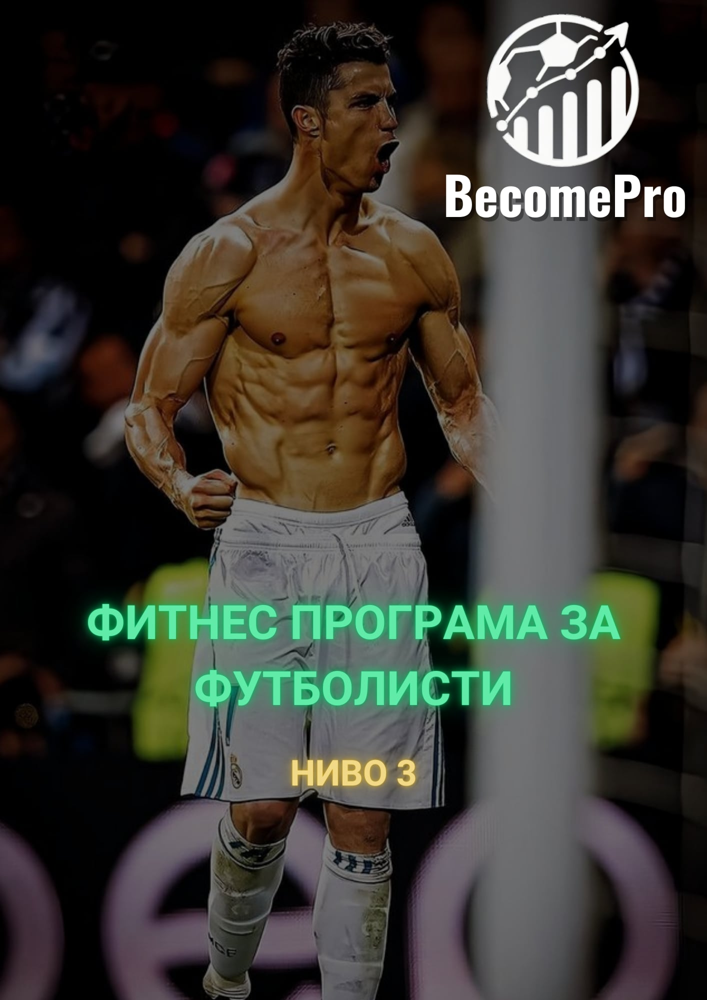

Онлайн програма
Лятна програма
Програма за футболисти, които искат да използват лятото правилно и да се върнат по-подготвени, по-дисциплинирани и по-уверени.
Цена€49.99
Достъп до материалите след покупка.

Въведение
Лятото може да бъде пауза или предимство.
Лятната програма е за футболисти, които не искат подготовката им да бъде случайна, когато сезонът свърши или тренировките намалеят.
Целта е играчът да има ясен ритъм, конкретни задачи и посока, за да се върне по-подготвен и уверен.
Какво има вътре
Подготовка с фокус, а не случайни тренировки.
Програмата събира работа върху форма, постоянство и развитие в период, който много играчи изпускат.
 Техника и топка
Техника и топка Форма и дисциплина
Форма и дисциплинаПълно описание
Какво представлява програмата?
Лятната програма е онлайн система за футболисти, които искат да използват свободния период за реална подготовка, вместо да губят ритъм.
Тя е подходяща за играчи, които искат повече постоянство, по-добра форма и по-ясна структура между сезоните.
�зползва се като самостоятелен план за работа. Нужни са дисциплина, време за тренировки и желание да се поддържа високо ниво през лятото.
ФокусПостоянство • Форма • Развитие
Сезонна програма за играчи, които искат лятото да работи за тях.
Какво получаваш
Ясна подготовка за летния период.
Ритъм
Подреден план, който помага да не губиш форма.
Техника
Работа с топка и конкретен фокус върху качеството.
Форма
Насоки за по-добра физическа готовност.
Постоянство
Система, която те държи в тренировъчен режим.
Достъп
Материали, които можеш да следваш след покупка.
За кого е подходяща
За играчи, които искат структурирана подготовка през лятото.
Тази програма е подходяща за футболисти, които искат да се върнат по-подготвени, по-дисциплинирани и по-уверени след летния период.